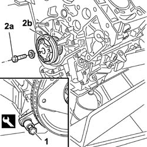
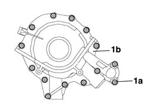
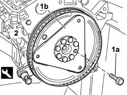
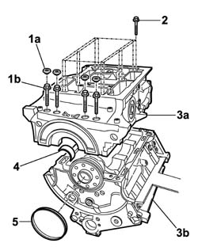
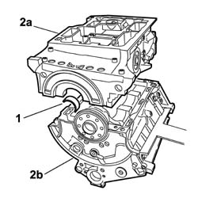
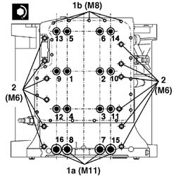
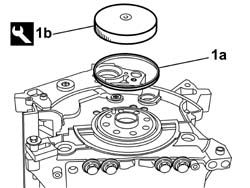
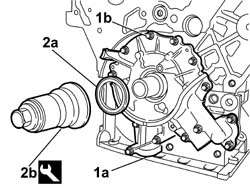
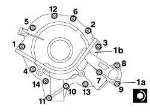
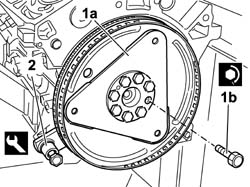

1012A23 LOWER ENGINE BLOCK - R R CLEAN MATING SURFACES AND APPLY SEALANT WITH ENGINE REMOVED
- Path
- Procedures > 10 ENGINE > 1012 ENGINE CRANKCASE > 1012A CRANK CASE AND COMPONENTS > 1012A23 LOWER ENGINE BLOCK - R R CLEAN MATING SURFACES AND APPLY SEALANT WITH ENGINE REMOVED
- Kind
- repair procedure (removal / refitting; the operation number is the code)
- Applies to
- engines: 3.0 24V V6; all production periods
- Interactive page
- https://sloeber94.github.io/elrnDB-fUlss/en/#/179006863
Applies to: engines: 3.0 24V V6; all production periods
 Removing
Removing
 Refitting
RefittingOp. 1004D40 ENGINE - POSITION ON STAND AND REMOVE
Op. 1032B16 TOOTHED TIMING BELT - R R WITH ENGINE REMOVED
Op. 1020A24 CRANK CASE OIL SUMP - R + R CLEAN SEALS FOR SEALANT APPLICATION WITH ENGINE REMOVED
1. Fit the flywheel lock.
2. Undo the bolt (2a) and remove the timing belt toothed drive pulley (2b).
Description | Code | Function | |
|---|---|---|---|
1 | Counter-torque | 1.860.846.000 | Flywheel lock |

Applies to: engines: 3.0 24V V6; all production periods
1. Undo the fixing bolts (1a) and remove the crankshaft front oil seal cover with built-in oil pump (1b).

Applies to: engines: 3.0 24V V6; all production periods
1. Undo the bolts (1a) and remove the engine flywheel (1b).
2. Remove the flywheel lock.
Description | Code | Function | |
|---|---|---|---|
2 | Counter-torque | 1.860.846.000 | Flywheel lock |

Applies to: engines: 3.0 24V V6; all production periods
1. Undo and remove the plugs (1a), then undo the bolts (1b) underneath securing the lower crankcase with a bearing cap function.
2. Loosen the remaining bolts fixing the lower crankcase to the upper crankcase
3. Separate the lower crankcase (3a) from the upper crankcase (3b) and place it on a workbench.
4. Remove the lower main journal half-bearings.
5. Remove the crankshaft rear oil seal

Applies to: engines: 3.0 24V V6; all production periods
Refitting
Removing- Clean any residues of sealant from the surfaces of the upper and lower crankcases.
- Apply the specified sealant continuously without any breaks over the entire perimeter of the lowe crankcase.
Component | Type | Description | Classification | Quantity | Validity |
|---|---|---|---|---|---|
LOWER CRANKCASE PLANES | Silicon sealant | LOCTITE 5900 | - | 2 mm | - |
1. Fit the main journal half-bearings in the lower cylinder block/crankcase.
2. Fit the lower crankcase (2a) on the upper one (2b).

Applies to: engines: 3.0 24V V6; all production periods
1. Tighten the M11 (1a) and M8 (1b) bolts to the pre-torque given in the table.
Value daNm | Fastening | Component | Ø | |
|---|---|---|---|---|
1a | (Lower crankcase - pre-torque) 3 | Bolt | ENGINE CRANKCASE | M11 |
Value daNm | Fastening | Component | Ø | |
|---|---|---|---|---|
1b | (Lower crankcase - pre-torque) 1 | Bolt | ENGINE CRANKCASE | M8 |
2. Tighten the M6 bolts to the recommended torque.
Value daNm | Fastening | Component | Ø | |
|---|---|---|---|---|
1b | (Lower crankcase - pre-torque) 1 | Bolt | ENGINE CRANKCASE | M6 |
- Undo the M11 and M8 bolts until the torque applied previously is cancelled.
- Tighten the M8 and M11 bolts fixing the lower crankcase to the upper crankcase definitively to the recommended torque following the order illustrated in the diagram; use the special tool for the angular tightening.
Value daNm | Fastening | Component | Ø | |
|---|---|---|---|---|
3 + 180° | Bolt | ENGINE CRANKCASE | M11 |
Value daNm | Fastening | Component | Ø | |
|---|---|---|---|---|
1+ 180° | Bolt | ENGINE CRANKCASE | M8 |
Description | Code | Function | |
|---|---|---|---|
Torque wrench | 1.860.942.000 | Angular tightening of lower crankcase bolts |

Applies to: engines: 3.0 24V V6; all production periods
Op. 1004B18 POWER UNIT WITH MANUAL GEARBOX, WITH SUPPORT FRAME, FRONT SUSPENSION R + R FOR VERSIONS WITH A/C
1. Fit the flywheel side oil seal (1a) using the tool (1b).
Description | Code | Function | |
|---|---|---|---|
1b | Tool for fitting oil seal | 1.870.895.000 | Fitting flywheel side oil seal |

Applies to: engines: 3.0 24V V6; all production periods
1. Position the crankcase front cover with built-in oil pump (1a) and screw in the fixing bolts (1b) without tightening them.
2. Fit the oil seal (2a) using the tool (2b).
Description | Code | Function | |
|---|---|---|---|
2b | Crankshaft front oil seal cover (timing side) | 1.870.896.000 | Tool for fitting oil seal |

Applies to: engines: 3.0 24V V6; all production periods
1. Tighten the bolts (1a) fixing the crankcase front cover with built-in oil pump (1a) following the procedure described below and the tightening order given in the diagram for each stage.
- Pre-tighten the oil pump fixing bolts to the value given in the table.
Value daNm | Fastening | Component | Ø | |
|---|---|---|---|---|
0.5 | Bolt | ENGINE OIL PUMP | M |
- Tighten the bolts fixing the oil pump to the recommended torque.
Value daNm | Fastening | Component | Ø | |
|---|---|---|---|---|
0.8 | Bolt | ENGINE OIL PUMP | M |
- Carry out the tightening several times following the order given until each bolt is at the recommended torque.

Applies to: engines: 3.0 24V V6; all production periods
1. Fit the engine flywheel (1a) and secure it without tightening the bolts (1b).
2. Fit the flywheel lock.
Description | Code | Function | |
|---|---|---|---|
2 | Counter-torque | 1.860.846.000 | Flywheel lock |
- Tighten the flywheel bolts to torque.
Value daNm | Fastening | Component | Ø | |
|---|---|---|---|---|
1b | 2 + 60° | Bolt | FLYWHEEL (MECH.) | M |

Applies to: engines: 3.0 24V V6; all production periods
Complete with
Op. 1020A24 CRANK CASE OIL SUMP - R + R CLEAN SEALS FOR SEALANT APPLICATION WITH ENGINE REMOVED
Complete with
Op. 1032B16 TOOTHED TIMING BELT - R R WITH ENGINE REMOVED
Complete with